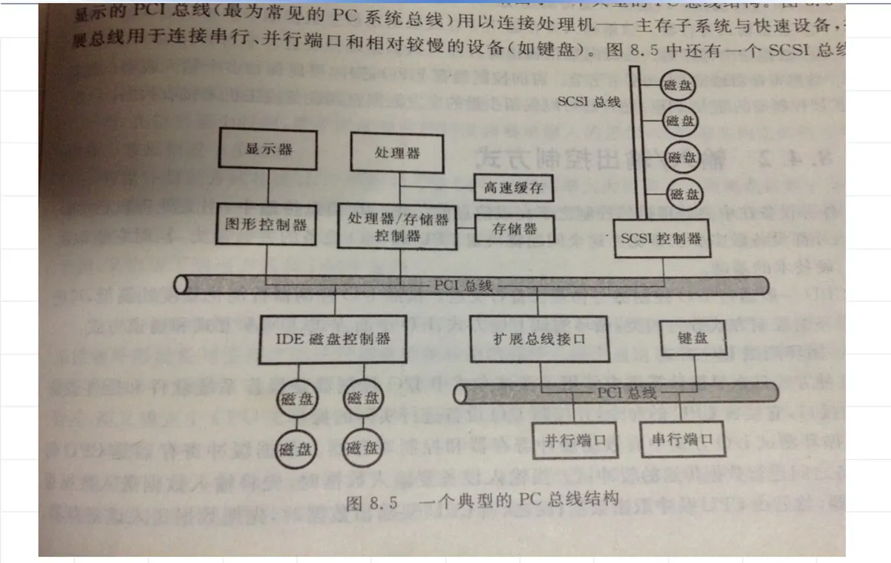
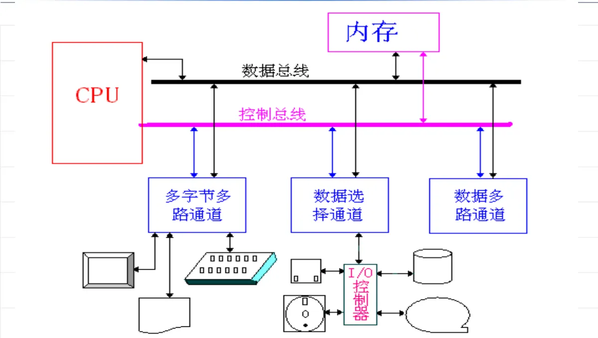
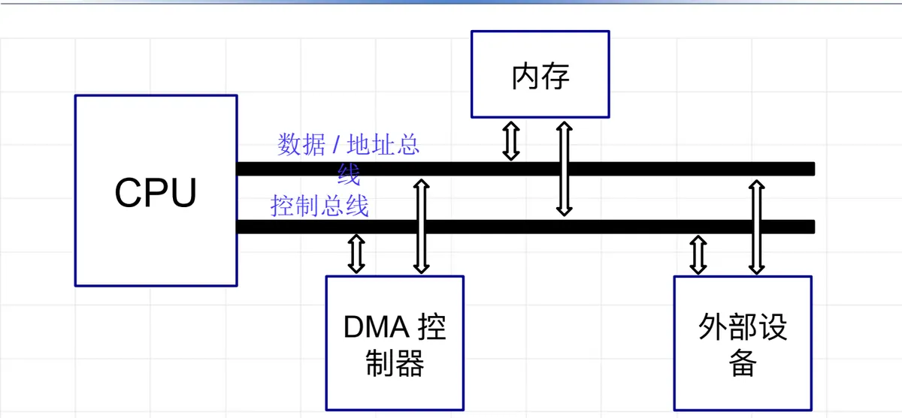
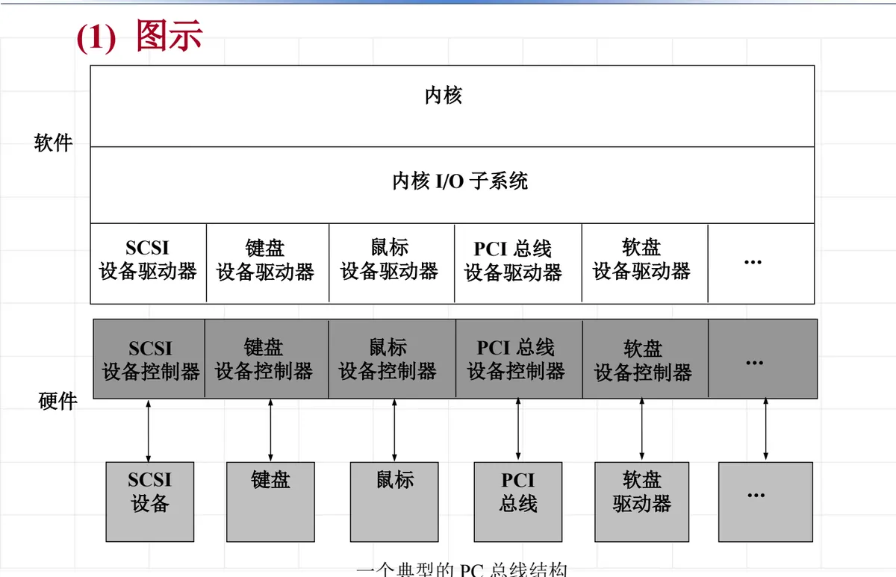
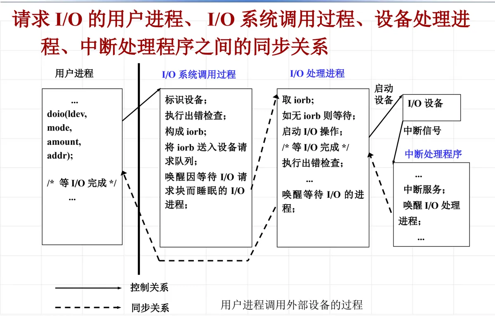

操作系统原理 · 第 8 章 设备管理
8.4 设备控制
上一节把设备分给了进程，这一节接着往下钻：分到设备以后，CPU 究竟怎样把数据送进设备、又从设备取回来？原课件把「设备输入/输出控制」分成三块——CPU 和设备通信的几个概念、CPU 访问设备的方式和发展、输入/输出控制方式。我们就沿这条线索走：先弄清端口、总线、控制器这些硬件名词，再按出现顺序比较循环测试（程序查询）、I/O 中断、通道、DMA 四种控制方式，看清每一种解决了前一种的什么缺陷；最后落到操作系统内部的 I/O 子系统，看设备驱动程序与中断处理程序如何分工，并用一次 doio 系统调用把用户进程、I/O 系统调用过程、设备处理进程和中断处理程序串起来。
1. 端口、总线与控制器
CPU 并不是直接「接」在设备上的，它与设备之间隔着一层可编程的硬件接口。先把几个名词分清楚：
- 接口：设备与计算机通信的连接点；
- 端口：外设中可以被计算机读写的寄存器；
- 总线：一组线，以及严格定义在这组线上传输信号的协议。总线上可以连接一个或多个设备；并行总线一般包括数据总线、地址总线和控制总线，串行总线只有一个数据通道；
- 控制器：用于操作端口、总线或设备的一组电子器件，一般有状态、命令、数据输入、数据输出等寄存器（端口）。

把这几层串起来看：CPU 对设备的每一次操作，实际上都是对控制器中某个端口的读写——把命令写进命令寄存器，从状态寄存器读出设备状态，从数据寄存器取走或送入数据；这些读写又都要经过总线。后面几种 I/O 控制方式的差别，说到底就是「谁来盯着这些寄存器、谁来搬数据」的分工不同。
2. 循环测试 I/O 方式（程序查询方式）
外部设备在 CPU 的控制之下完成信息的传输，CPU 通过控制器与设备打交道——这是所有控制方式的共同前提。最朴素的做法是让 CPU 亲自「守着」设备，原课件称为循环测试 I/O 方式（早期计算机中使用，今天通常称为程序查询方式）。
它的工作过程是：设备控制器中有数据寄存器和控制寄存器，CPU 通过设置控制寄存器中的启动位来启动设备进行实际操作，然后反复检测控制器的完成位，判断操作是否完成；若完成，就从数据寄存器中读入数据。
这种方式的工作方式简单，但 CPU 的利用率很低：CPU 的速度高出 I/O 设备几个数量级，设备完成一次操作所需的时间对 CPU 来说极其漫长，而这些时间全被消耗在反复读取完成位上——CPU 并没有做任何有用的事情。
3. I/O 中断方式
改进的思路是让设备在完成操作后主动通知 CPU，把「盯着设备」变成「等设备来叫」。I/O 中断方式下，一次数据输入/输出的步骤是：
- （1）要求输入数据的进程把一个启动命令和允许中断位「1」写入相应设备的控制状态寄存器中，从而启动了该设备；
- （2）该进程因等待输入的完成进入睡眠状态，CPU 转去执行其它任务；
- （3）当输入完成后，输入设备向 CPU 发出完成中断请求信号；
- （4）处理机响应中断，在中断处理过程中读数据寄存器的内容到缓冲区，并唤醒等待输入完成的进程。
这种方式的优点是大大地提高了 CPU 的利用效率：等 I/O 的进程让出处理机，CPU 不必空转。缺点是每输入/输出一个数据都要中断 CPU——因为数据寄存器只能存放一个数据；如果系统中配备了多台（套）设备，或者一次要获取的数据量比较大，中断的次数随之增加，CPU 的利用率也会降低。这里的「睡眠—中断—唤醒」正是第 2 章 2.5 节「中断及其处理」与第 4 章 4.5 节「进程同步机构」提供的机制：中断负责让 CPU 知道 I/O 结束了，等待队列与唤醒操作负责让睡眠的进程重新具备运行条件。
4. 通道方式
中断方式解决了 CPU 空转的问题，但没有解决「每传一个数据都打扰 CPU」的问题。要彻底解脱 CPU，就得让一个专门的部件替它完成 I/O 事务——这就是通道。
设置通道的目的是：使 CPU 从 I/O 事务中解脱出来，同时提高 CPU 与设备、设备与设备之间的并行工作能力。通道是独立于 CPU 的、专门负责数据输入/输出传输工作的处理机，它对外部设备实现统一管理，代替 CPU 对输入/输出操作进行控制，从而使输入、输出操作可与 CPU 并行操作。通道有自己的指令系统和通道程序，接受 CPU 的命令，而又独立于 CPU 工作。

按工作方式的不同，通道分为三种类型。
（1）字节多路通道
字节多路通道以字节为单位传输信息，它可以分时地执行多个通道程序：当一个通道程序控制某台设备传送一个字节后，通道硬件就控制转去执行另一个通道程序，控制另一台设备传送信息。它以字节为单位交叉传输，当一台设备传送一个字节后，立即转去为另一台传送字节。这种通道主要连接以字节为单位的低速 I/O 设备，如打印机、终端。
（2）选择通道
选择通道以成组方式工作，即每次传送一批数据，故传送速度很高。选择通道在一段时间内只能执行一个通道程序，只允许一台设备进行数据传输；当这台设备数据传输完成后，再选择与通道连接的另一台设备，执行它相应的通道程序。它主要连接磁盘等高速 I/O 设备——用「独占一段时间、高速度传完一批」的方式换取高速设备的传输效率。
（3）数组多路通道
数组多路通道结合了选择通道传送速度高和字节多路通道能进行分时并行操作的优点：它先为一台设备执行一条通道指令，然后自动转接，为另一台设备执行一条通道指令。这样，对于连接多台磁盘机的数组多路通道，它可以启动它们同时执行移臂定位操作，然后按序交叉地传输一批批数据——把各台设备「等待机械动作」的时间重叠利用起来。数组多路通道实际上是对通道程序采用多道程序设计的硬件实现，主要连接磁带等中速设备。
（4）通道工作方式：CPU 与通道的分工
通道虽然是处理机，但它不执行用户程序，只执行 CPU 为它准备好的通道程序。一次通道方式的 I/O 过程可以分成三段：
- CPU 侧：执行用户程序，当遇到 I/O 请求时，可根据该请求生成通道程序放入内存（也可事先编好放入内存），并将该通道程序的首地址写入通道的寄存器中；之后执行「启动 I/O」指令，启动通道工作。
- 通道侧：接收到「启动 I/O」指令后，根据首地址取出第一条指令，同时向 CPU 发回答信号，使 CPU 可继续执行其他程序；通道则开始执行通道程序，启动 I/O 设备，完成传输工作。
- 收尾：当通道传输完成最后一条指令时，向 CPU 发 I/O 中断，并且通道停止工作；CPU 接收中断信号，从通道状态寄存器中取得有关信息，决定下一步做什么。
可以看到，通道与 CPU 之间靠「启动 I/O 指令—回答信号」开始握手，靠「I/O 中断—通道状态寄存器」结束协作，中间的长过程完全由通道自己完成；这一套中断机制正是第 2 章 2.5 节所讲的内容。
5. DMA 方式
通道方式要由通道处理机取指令、执行通道程序，适合控制多台设备、完成成批的数据传输；但有些传输并不需要复杂的控制，只是把一大块数据从主存搬到设备，或从设备搬到主存。为此有了 DMA 方式（Direct Memory Access，直接存储器存取）：DMA 控制器「接管」地址线和数据线，直接控制 I/O 设备和主存的数据交换，I/O 设备与主存之间的数据传输不需要 CPU 介入，从而减轻 CPU 的负担。
（1）DMA 的结构

（2）DMA 工作原理：获取总线控制权
DMA 控制器要「接管」总线，就必须与 CPU 争夺总线的使用时间。一次 DMA 传送的完整过程是：
- （1）当一个进程请求从一个设备传输数据时，将内存数据的起始地址、要传送的字节数送入 DMA 控制器的内存地址寄存器和传送字节计数器；
- （2）把中断允许位和启动位置成 1，启动 DMA 传送；
- （3）该进程进入等待状态，操作系统调度其他进程占据 CPU（调度见第 6 章 6.4 节「进程调度」）；
- （4）DMA 控制器不断地和 CPU 竞争地址/数据总线的使用时间，操作总线进行内存和设备的数据交换；
- （5）传送完毕，DMA 控制器发出中断信号；CPU 接到中断信号转入中断处理程序处理；
- （6）中断处理结束，操作系统唤醒请求传输数据的进程，参与调度运行。
注意这里的「接管」并不是把 CPU 赶走，而是趁 CPU 不访问主存的间隙插进去传送数据。原课件只说到 DMA 控制器「不断地和 CPU 竞争地址/数据总线的使用时间」；这种 DMA 与 CPU 轮流占用总线的方式，在教材里通常称为周期窃取（cycle stealing），它是 DMA 方式提高效率的关键，也是它与通道方式的又一处区别。
6. 四种控制方式的比较
把前几段的内容并排放在一起，四种方式的演进线索就清楚了：控制传输的主体从 CPU 自己，逐步转移给设备控制器、通道处理机，直到 DMA 控制器；CPU 的参与程度则从全程空转，降到只处理中断，再降到只做启动与收尾。为了便于对照，把它们的要点归纳如下。
| 方式 | 数据传输主体 | CPU 的参与 | 优点 |
|---|---|---|---|
| 循环测试（程序查询） | CPU 亲自读写控制器寄存器 | 反复检测完成位，全程空转等待 | 工作方式简单 |
| I/O 中断 | 设备完成后中断 CPU | 启动设备后转去执行其它任务，中断时介入 | 大大提高 CPU 利用效率 |
| 通道 | 通道处理机执行通道程序 | 生成通道程序并执行「启动 I/O」，完成后处理中断 | CPU 从 I/O 事务中解脱，CPU 与设备、设备与设备可并行 |
| DMA | DMA 控制器接管地址线与数据线 | 设置寄存器后让出 CPU，传送完毕处理中断 | 设备与主存之间的传输不需 CPU 介入，减轻 CPU 负担 |
需要说明的是，这四种方式并不是互相替代的关系，而是按设备特性和数据量分层使用的：低速字符设备用中断方式足矣，磁盘整块数据的搬运交给 DMA，而连接多台设备的成批传输则由通道统筹。
7. 输入/输出子系统
到此为止讨论的都是「CPU 怎样与设备交换数据」。但一台机器上可能挂着成百上千种设备，如果每换一种设备就要改写上层软件，操作系统将无法维护。为此，操作系统中采用抽象、封装、分层、模块化的软件开发方法，实现设备控制和管理的软件模块，这就是 I/O 子系统。
它的基本做法是：将使用特性相似的设备归为一类，I/O 子系统对设备进行分类管理，每个通用类型的设备都通过一组标准函数来访问。对设备控制和操作的具体差别，则被 I/O 子系统中的内核模块——称为设备驱动程序（device driver）——所封装。
设备驱动程序层的作用是为内核 I/O 子系统隐藏设备控制之间的差异。把 I/O 子系统与硬件分离，既简化了操作系统开发人员的任务，也有利于设备的设计与制造：设备一侧只要按约定提供驱动程序，就能接入这个统一的框架。
（1）分层结构：一个典型的 PC 总线结构

看图 4 的上下两层：上面是内核软件层的内核 I/O 子系统和它的各类设备驱动器，下面是硬件层的各类设备控制器与设备，两组一一对应。正因为中间有驱动这一层，内核 I/O 子系统才能只用「块设备、字符设备、网络设备」这样少数几个类别来看待千差万别的硬件。
（2）各类设备的用户接口
分类管理的结果，是每一类设备对外提供自己的一组操作，用户通过这组标准函数使用设备。原课件列举了下面这些：
- ① 块设备接口：read、write、seek；
- ② 主存映射接口：mmap；
- ③ 字符流设备接口：get、put，以及行缓冲/编辑；
- ④ 网络套接字接口：socket、bind、listen、accept、send、recv；
- ⑤ 声音设备接口；
- ⑥ 显示设备接口；等等。
接口的名称和形式随设备类型而不同，但遵循同一思路：把设备的具体操作归结为少数几个标准函数，上层软件只认函数、不认硬件。
（3）调用 I/O 核心模块（设备驱动程序）的两种方式
控制设备 I/O 工作的核心模块通常称为设备驱动程序。用户调用设备驱动程序的方式有以下两种：
- ① 以设备处理进程的方式：ⅰ 为每一类设备设置一个设备处理进程；ⅱ 当有 I/O 请求来到时该进程被唤醒，进行设备驱动工作，当没有 I/O 请求时该进程睡眠。由 I/O 控制模块的接口程序负责解释用户的 I/O 系统调用，将其转换成 I/O 控制模块认识的命令形式后，将 I/O 请求发给对应的设备处理进程。
- ② 将设备与文件一样对待：使用文件系统的系统调用进行设备的读写。设备作为特殊文件也有相应的索引节点，通过索引节点进入该设备的驱动程序。这样，「打开文件—读写—关闭」的一套操作原封不动地用在了设备上（索引节点的结构见第 9 章 9.5 节「文件目录及其结构」与 9.8 节「UNIX 文件系统的主要结构及实现」）。
（4）I/O 子系统的功能
归纳起来，I/O 子系统承担三项功能：
- ① 解释用户的 I/O 系统调用；
- ② 设备驱动；
- ③ 中断处理。
一般完整操作一个设备的软件模块，也相应地分为这三部分。下一段的一次 doio 调用，正好把这三项功能都走了一遍。
8. 一次 I/O 请求的完整过程：doio 系统调用
把上面的硬件与软件串起来的最好办法，是跟着一次真实的 I/O 请求走一遍。原课件给出的例子是系统功能调用 doio。
（1）系统调用的形式与参数
系统功能调用的形式为：
doio(ldev, mode, amount, addr);四个参数的含义是：
- ldev：逻辑设备名；
- mode：操作模式；
- amount：传输数据的数目；
- addr：传送数据的内存地址。
（2）I/O 系统调用过程
用户进程发出 doio 之后，并不直接去动设备，而是由 I/O 系统调用过程做三件事：
- ① 将逻辑设备转换为物理设备：ⅰ 获得 I/O 系统调用中给出的逻辑设备名（ldev）；ⅱ 根据逻辑设备描述器，将逻辑设备名转换为物理设备名。这一步正是 8.1 节所讲的设备独立性——用户程序中只用逻辑设备名，至于这个逻辑名当前对应哪台物理设备，由系统决定。
- ② 合法性检查：ⅰ 获得 I/O 系统调用中给出的操作模式 mode；ⅱ 根据 DCB 中命令转换表中允许的操作，检查操作的合法性。DCB 即 8.1 节介绍的设备控制块，其中有设备名、设备属性、指向命令转换表的指针等项；命令转换表存放该设备驱动和控制程序的入口地址，不具备相应功能的操作，其例程地址可以填「-1」或 NULL。
- ③ 形成 I/O 请求块，发消息给对应的设备处理进程：ⅰ 根据请求的参数形成 I/O 请求块（IORB）；ⅱ 将 I/O 请求块（IORB）挂到对应的设备请求队列。挂上队列之后，何时被取出就取决于 8.3 节讲的分配算法——先请求先服务，或者按优先级高低。
用程序描述出来，系统调用过程大致是这样一段：
{
while (该进程的逻辑设备描述器队列不空)
{
if (与 ldev 相联结的物理设备找到) break;
}
if (该进程的逻辑设备描述器队列为空)
return(错误码); /* 设备逻辑名错 */
检查参数与该设备特性是否一致;
if (不一致) return(错误码); /* 传送参数错 */
构造 iorb;
把 iorb 插入该设备的请求队列;
唤醒因等待 I/O 请求块而睡眠的进程;
}（3）设备处理进程
设备处理进程是设备驱动工作的执行者。它循环地从设备请求队列中取出 IORB，启动 I/O 操作，然后睡眠等待 I/O 完成；被中断处理程序唤醒后，做收尾工作并唤醒请求 I/O 的用户进程。用程序描述出来大致是：
process io
{
l: while (设备请求队列不空)
{
取一个 iorb;
提取请求的详细信息;
启动 I/O 操作;
sleep (事件：I/O 完成);
if (出错) 将错误信息写在该设备的 dcb 中;
传送数据到目的地;
唤醒请求此 I/O 操作的进程;
删除 iorb;
}
sleep (事件：因无 I/O 请求);
goto l;
}其中 sleep 一句是整段程序的关键：设备处理进程在启动 I/O 之后就把自己挂起，直到中断到来；等 I/O 完成后，CPU 进入中断处理程序，并在那里唤醒设备处理进程，它才继续执行后面的收尾动作。
（4）中断处理程序
当设备的 I/O 完成之后，产生中断使得 CPU 进入中断处理程序；在中断处理程序中唤醒设备处理进程。中断处理程序本身做得很短——只做必要的服务并唤醒该醒的进程，把耗时的数据传送和善后交给被唤醒的设备处理进程去做，这样才能保证中断响应的及时性。
（5）四者之间的同步关系

图 5 把整条链路画全了：用户进程发出 doio 后等待 I/O 完成；I/O 系统调用过程标识设备、执行出错检查、构成 iorb、将 iorb 送入设备请求队列，并唤醒因等待 I/O 请求块而睡眠的 I/O 进程；设备处理进程取 iorb（如无 iorb 则等待）、启动 I/O 操作、执行出错检查，然后睡眠；I/O 设备完成后送来中断信号，中断处理程序做中断服务并唤醒 I/O 处理进程，后者再传送数据、唤醒等待 I/O 的进程。
图中有两类关系要分清：一类是控制关系，即「用户进程调用外部设备的过程」，从用户进程经 I/O 系统调用过程、设备处理进程到 I/O 设备，是请求的传递方向；另一类是同步关系，即设备处理进程与中断处理程序之间依靠中断信号和唤醒操作相互配合——这正是第 4 章 4.5 节「进程同步机构」所讲的等待与唤醒在设备管理中的具体应用。
本节小结
- CPU 通过控制器与设备打交道：接口是连接点，端口是控制器中可被读写的寄存器，总线分并行（数据、地址、控制三组）与串行两种；
- 四种 I/O 控制方式的演进：循环测试（程序查询）由 CPU 空转等待，简单但利用率极低；I/O 中断让进程睡眠、设备完成后中断唤醒，CPU 利用率大大提高，但每传一个数据仍要中断一次；通道用独立于 CPU 的专用处理机执行通道程序，使 CPU 从 I/O 事务中解脱；DMA 由 DMA 控制器与 CPU 竞争总线，直接在设备与主存之间搬数据，不需 CPU 介入；
- 通道按工作方式分为字节多路通道（字节交叉、低速设备）、选择通道（成组传送、独占一段时间、高速磁盘）、数组多路通道（按通道指令自动转接，兼顾速度与并行，中速设备）；
- I/O 子系统用抽象、封装、分层、模块化的方法把设备分类管理，设备驱动程序向上隐藏设备控制之间的差异，各类设备各有标准接口（块设备、主存映射、字符流、套接字等）；驱动程序的调用有设备处理进程与「设备当文件」两种方式；
- 一次 doio 调用的完整链路：用户进程 → I/O 系统调用过程（逻辑设备转物理设备、合法性检查、构造 IORB 并入队）→ 设备处理进程（取 IORB、启动 I/O、睡眠等待）→ 中断处理程序（中断服务、唤醒设备处理进程）→ 唤醒用户进程。控制关系沿这条链传递，同步关系靠中断与唤醒维持。